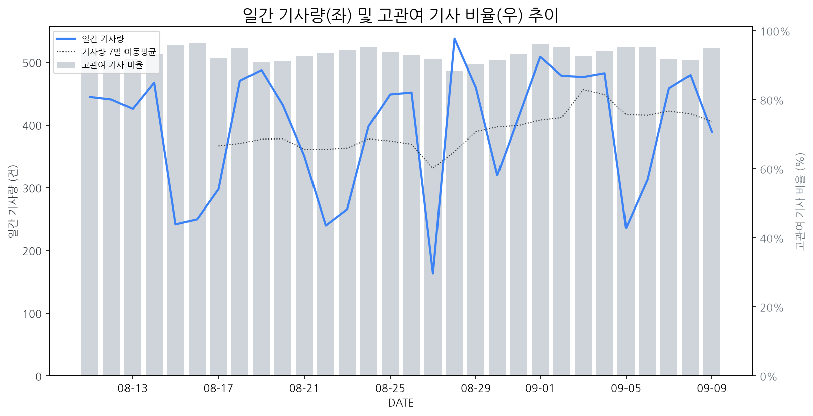

1
시장 활동 지표
기사량 추세 & 이상 징후 탐지
시장의 '전체 기사량'이 평소보다 비정상적으로 급증했는지(Spike)를 차트로 확인하고, LLM이 분석한 급등의 핵심 원인을 파악할 수 있음

고관여 기사란? 산업 연관 키워드로 수집된 기사들 중 디스플레이 키워드에 가중치를 반영하여 도출된 관련성 높은 기사
수집된 기사 수 (2026-09-09)
389
-19% WoW
기사량 변동 수준 (7일 이동평균 대비)
±6.7% 이하
2
오늘의 키워드
급격한 관심 ↑, 주목해야 할 키워드
1
아이폰
+7.8σ
아이폰 신제품 및 폴더블폰 출시 루머로 디스플레이 패널 수요 확대 기대감 증폭.
Related Metrics
금일 언급량: 46, 전일 대비: +41
Interpretation
OLED, 폴더블 수요 증가
Next Step
'아이폰' 관련 상세 기사 및 경쟁사 반응 모니터링
2
애플
+4.8σ
애플의 다수 신규 폴더블 기기 및 OLED 탑재 신제품 출시 루머로 관련주 급등
Related Metrics
금일 언급량: 42, 전일 대비: +25
Interpretation
폴더블/OLED 시장 확대 기대
Next Step
핵심 토픽 'Foldable_Display_Topic' 관련 신호입니다. 3번 섹션(키워드 감성분석)에서 해당 토픽의 감성 변동을 교차 확인하세요.
3
폴더블
+3.4σ
애플의 폴더블폰 '아이폰 듀오' 공개 및 출시 소식이 시장의 큰 관심을 받고 있습니다.
Related Metrics
금일 언급량: 28, 전일 대비: +12
Interpretation
폴더블 디스플레이 수요 확대 기대
Next Step
'폴더블' 관련 상세 기사 및 경쟁사 반응 모니터링
4
레노버
+3.0σ
HL클레무브와의 자율주행 컴퓨팅 공동개발 발표가 핵심이며, AI PC 신제품 출시도 긍정적 영향.
Related Metrics
금일 언급량: 18, 전일 대비: +17
Interpretation
AI PC, 자율주행 분야 패널 수요 기대
Next Step
핵심 토픽 'IT_OLED_Topic' 관련 신호입니다. 3번 섹션(키워드 감성분석)에서 해당 토픽의 감성 변동을 교차 확인하세요.
3
실시간 Risk 키워드
경계해야 할 시그널 탐지
특정 토픽의 부정 감성 점수가 급등할 때 이를 즉시 탐지하고, "근거 기사" 링크를 통해 리스크의 실체를 빠르게 파악할 수 있음
키워드 분석 결과, 오늘은 걱정할 만한 하락 신호가 없습니다. (부정 언급량 변화: +1.5σ 이내)
4
주요 이벤트 모니터링
실시간 산업 동향 파악을 위한 주요 활동
최근 발생한 주요 기업들의 신제품 출시, 투자 등 주요 이벤트를 제공하여 매일 경쟁사 동향을 확인할 수 있음
애플이 내일 폴더블폰 '아이폰 울트라'를 공개할 예정이며, 생산 차질로 인해 실제 출시는 10월 말로 예상된다.
Impact
폴더블 디스플레이 시장의 경쟁 심화를 야기하고, 관련 디스플레이 패널 공급망에 새로운 기회와 도전을 제시할 것으로 예상된다.
Next Step
폴더블 디스플레이 생산 능력 확대 및 차세대 기술 개발에 집중하여 애플의 요구사항에 선제적으로 대응해야 한다.
삼성전자와 SK하이닉스에서 반도체 리서치센터 관련 인사가 재편된다는 소식입니다. 이는 업계에서 오랜 기간 자리 잡았던 조직의 변화를 의미합니다.
Impact
이번 반도체 리서치센터의 재편은 디스플레이 시장의 핵심 소재 및 기술 개발 방향에 대한 인사이트와 전략 수립에 영향을 미칠 수 있습니다.
Next Step
디스플레이 제조 기업은 관련 리서치센터의 재편이 디스플레이 기술 로드맵에 미칠 영향을 파악하고, 필요한 협력 또는 기술 개발 전략을 재검토해야 합니다.
스마트폰 OLED 시장에서 원가 경쟁력 확보를 위한 공정 통합 움직임이 가속화되고 있습니다. 이는 제조사들의 수익성 개선 및 시장 점유율 확보를 위한 전략의 일환으로 분석됩니다.
Impact
OLED 공정 통합은 부품 공급망 재편과 기술 격차 심화로 이어져, 중소 부품 업체들에게는 생존 위협으로 작용할 수 있습니다.
Next Step
디스플레이 제조 기업은 핵심 공정 기술 내재화 및 고도화를 통해 원가 경쟁력을 확보하고, 차별화된 기술력을 바탕으로 시장 지배력을 강화해야 합니다.
IFA 2026에서 AI 홈 및 로봇 기술이 가전을 넘어 새로운 전시 트렌드로 부상하며 디스플레이 시장의 변화를 예고했습니다. 이는 기존 가전 중심의 디스플레이 수요를 넘어선 새로운 시장 기회를 시사합니다.
Impact
AI 홈 및 로봇 기술의 발전은 인터페이스로서 디스플레이의 역할 확대를 촉진하여, 스마트 홈 허브, 로봇 디스플레이 등 새로운 형태의 디스플레이 수요를 창출하고 기술 혁신을 가속화할 것입니다.
Next Step
디스플레이 제조 기업은 AI 및 로봇 기술과의 연동성을 강화하고, 사용자의 몰입감과 편의성을 높이는 혁신적인 디스플레이 솔루션 개발에 집중해야 합니다.
중국의 8월 소비자물가지수(CPI)는 전년 동월 대비 0.8% 상승했으나, 생산자물가지수(PPI)는 3.8% 하락하여 디플레이션 탈출에 대한 우려가 여전한 상황입니다. 이는 중국 내 소비 및 산업 생산 활동의 둔화를 시사합니다.
Impact
중국의 소비 둔화는 디스플레이 패널의 주요 수요처인 스마트폰, TV 등 IT 기기 및 가전제품 시장의 수요 감소로 이어져, 디스플레이 제조 기업의 매출과 수익성에 부정적인 영향을 미칠 수 있습니다.
Next Step
수요 감소에 대비하여 중국 시장 의존도를 낮추고, 고부가가치 제품 개발 및 신흥 시장 개척을 통해 수익성을 확보하는 방안을 모색해야 합니다.